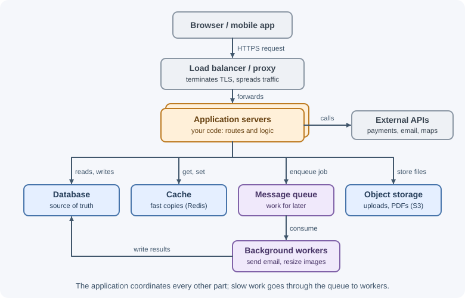
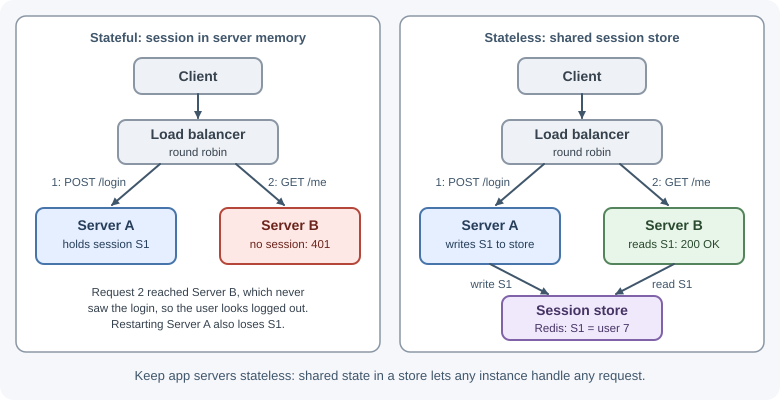
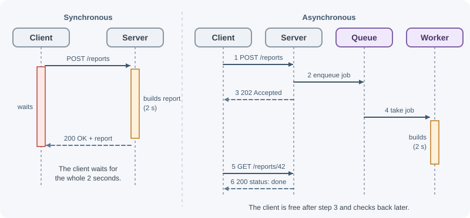

Backend Fundamentals¶
Backend development builds the server-side parts of an application. A backend receives requests, applies business rules, reads and writes data, talks to other services, and returns responses. Users never see it directly, but every login, search, payment, and saved form depends on it.
Why it matters¶
Some responsibilities cannot safely live in a browser or mobile app:
- Trust: code running on a user's device can be read and changed by that user. Access rules, prices, and permission checks must be enforced where the user cannot tamper with them.
- Shared data: many users and devices need to see the same orders, messages, and accounts. A central service coordinates that data.
- Secrets: database passwords, payment-provider keys, and signing keys must never be shipped to a client.
- Heavy or slow work: sending email, generating reports, and processing video should not depend on a user keeping a browser tab open.
- Many clients, one set of rules: a web app, a mobile app, and partner integrations can all use the same backend, so the rules live in one place.
Real-world usage¶
- Stripe keeps secret keys on the server. Stripe's API keys documentation states that only publishable keys are safe to expose outside your application's back end. A checkout page can use a publishable key in the browser, but creating charges or refunds needs a key that must stay in your backend. This is the "secrets" responsibility above in practice.
- Shopify chose a modular monolith over microservices. Shopify Engineering describes, in Deconstructing the Monolith, how one of the largest Ruby on Rails codebases evolved into a modular monolith: all code in one codebase, with boundaries defined and respected between components. They judged that microservices would bring their own set of challenges.
- Slack moves slow work to a job queue. In Scaling Slack's Job Queue, Slack explains that its job queue runs business logic that is too time-consuming to run inside a web request, and that it is used for every message post, push notification, URL unfurl, and calendar reminder. That is asynchronous processing at very large scale.
How it works¶
What a backend does¶
| Responsibility | What it means | Example |
|---|---|---|
| Expose an API | Accept requests in an agreed format and return responses | GET /api/orders/42 returns order 42 as JSON |
| Business logic | Apply the rules of the product | An order total includes tax and cannot be negative |
| Data persistence | Store data so it survives restarts and is shared | Save the order in a database |
| Authentication | Establish who is calling | Check a session cookie or access token |
| Authorization | Decide what that caller may do | A customer may read only their own orders |
| Validation | Reject malformed or dangerous input | A quantity must be a positive integer |
| Integrations | Call other systems | Charge a card through a payment provider |
| Background work | Run work outside the request | Email a receipt after the order is placed |
| Observability | Record what happened | Log errors, measure latency, trace slow requests |
The building blocks¶
A small backend can be a single process and a database. As an application grows, more specialized parts appear:

- Application server: the program you write. It routes requests, runs business logic, and coordinates everything else. In this section that is Node.js with Express.
- Database: the durable source of truth, such as PostgreSQL or MongoDB. See database fundamentals.
- Cache: a fast store, such as Redis, that keeps copies of data that is expensive to compute or fetch. See caching.
- Message queue: a buffer that lets one part of the system hand work to another without waiting. See message queues.
- Background workers: processes that take jobs from the queue. See background jobs and scheduling.
- Object storage: a store for files such as uploads and generated PDFs. See file storage and uploads.
- Load balancer or reverse proxy: spreads traffic across servers, terminates TLS, and shields the application. See reverse proxy.
Stateless and stateful servers¶
A stateless server keeps no memory of a client between requests. Every request carries what the server needs (a token or session ID), and any shared state lives in a database or cache.
A stateful server keeps client-specific data in its own memory, such as an in-memory session map or an open game room.
| Stateless | Stateful | |
|---|---|---|
| Scaling out | Add servers freely; any server can handle any request | Requests must return to the server holding the state (sticky sessions) |
| Restart or crash | Nothing is lost beyond in-flight requests | In-memory state is lost |
| Where state lives | Database, cache, or the client (token) | Process memory |
| Typical use | REST APIs, most web backends | WebSocket rooms, multiplayer games, some streaming |

Prefer stateless application servers. When you need state, put it in a shared store such as Redis so any instance can read it. See scalability.
Synchronous and asynchronous processing¶
Synchronous processing means the client waits while the server finishes the work and returns the result in the same response. It is right for fast operations whose result the client needs now, such as reading a profile.
Asynchronous processing means the server accepts the work, returns
quickly (often 202 Accepted), and finishes the work later in a background
worker. It is right for slow or unreliable work such as video encoding,
bulk imports, or calls to flaky third-party services.

Do not confuse this with asynchronous code. Node.js uses non-blocking I/O inside a single request, but the client still waits for that request's response. See the event loop.
Monoliths and microservices¶
A monolith is one deployable application that contains all features. A microservice architecture splits features into separately deployed services that talk over the network.
Most teams should start with a well-structured monolith. Microservices add network failures, distributed data, and operational overhead; they pay off when many teams need to deploy independently or parts of the system have very different scaling needs. See software architecture.
Common backend languages and frameworks¶
| Language | Popular frameworks | Typical strengths |
|---|---|---|
| JavaScript / TypeScript (Node.js) | Express, Fastify, NestJS, Hono | One language with the frontend; strong for I/O-heavy APIs |
| Python | Django, FastAPI, Flask | Fast development; strong data and machine-learning ecosystem |
| Java / Kotlin | Spring Boot, Ktor | Mature enterprise tooling; strong performance |
| Go | net/http, Gin, Echo | Simple concurrency; small, fast binaries |
| C# | ASP.NET Core | High performance; strong tooling on Windows and Linux |
| Ruby | Ruby on Rails | Convention-driven, very productive for CRUD apps |
| PHP | Laravel, Symfony | Huge hosting ecosystem; mature web frameworks |
| Rust | Axum, Actix Web | Memory safety and very high performance |
The concepts in this section (HTTP, APIs, authentication, errors, queues) apply to every stack. Only the syntax changes.
How a frontend talks to a backend¶
- The frontend sends an HTTP request, usually with
fetch(), to an API URL. - The request carries a method, path, headers (such as
Authorizationor a cookie), and sometimes a JSON body. - The backend authenticates the caller, validates the input, runs the logic, and talks to the database.
- The backend returns a status code, headers, and usually a JSON body.
- The frontend checks the status and updates the interface.
See the client-server model and request lifecycle for the full journey, and JSON and fetch for the frontend side.
When to use and when not to use¶
You need your own backend when:
- Data must be shared between users or devices and kept consistent.
- Rules must be enforced where users cannot tamper with them: prices, permissions, quotas, payments.
- You hold secrets: database credentials, payment keys, signing keys.
- Work must continue without the user's browser: emails, reports, imports, scheduled jobs.
- Several clients (web, mobile, partners) must share one set of rules.
You may not need a custom backend when:
- The site is static content (documentation, a portfolio, a landing page): a static host or CDN is enough.
- A managed service already covers the need (authentication, a hosted database with row-level rules, a payment provider's hosted checkout) and you have little custom logic.
- The logic is a few small, event-driven functions; serverless functions can be simpler than running servers.
| Situation | Static hosting | Managed backend service | Serverless functions | Your own backend server |
|---|---|---|---|---|
| Content only, no user data | Best fit | Overkill | Overkill | Overkill |
| Simple app, standard auth and CRUD | No | Good fit | Good fit | Works, more effort |
| Custom business rules, integrations | No | Limited | Good for small pieces | Best fit |
| Long-running work, WebSockets, steady high traffic | No | Limited | Awkward (time limits, cold starts) | Best fit |
| Full control of data and infrastructure | No | No | Partial | Yes |
Practical examples¶
A task API, conceptually¶
For a task-list product, the backend might expose:
| Request | What the backend does | Response |
|---|---|---|
GET /api/tasks |
Authenticates the user, loads only their tasks | 200 with a JSON array |
POST /api/tasks |
Validates the title, saves the task with the user's ID | 201 with the new task |
PATCH /api/tasks/42 |
Checks task 42 belongs to the user, applies the change | 200 with the updated task |
DELETE /api/tasks/42 |
Checks ownership, deletes | 204 with no body |
A minimal backend in Express¶
import express from "express";
const app = express();
app.use(express.json()); // parse JSON request bodies
const tasks = []; // in-memory only: lost on restart, not shared between servers
app.get("/api/tasks", (req, res) => {
res.json(tasks);
});
app.post("/api/tasks", (req, res) => {
const title = req.body?.title;
if (typeof title !== "string" || title.trim() === "") {
return res.status(400).json({ error: "title is required" });
}
const task = { id: tasks.length + 1, title: title.trim(), done: false };
tasks.push(task);
res.status(201).json(task);
});
app.listen(3000, () => console.log("API on http://localhost:3000"));
This shows routing, validation, and status codes. A real backend replaces the array with a database, adds authentication, and handles errors centrally. The rest of this section builds each of those pieces.
Best practices¶
- Separate concerns. Routes receive requests, services hold business rules, and data-access code talks to the database. Each layer is easier to test and change. See project structure.
- Never trust the client. Validate every input and enforce every permission on the server, even if the UI already hides the button.
- Keep servers stateless so you can run several copies behind a load balancer.
- Return predictable responses: correct status codes and one consistent error format. See HTTP status codes.
- Move slow work off the request path with queues and workers.
- Keep secrets out of code and load configuration from the environment. See configuration and secrets.
- Make failures visible with structured logs, metrics, and alerts. See logging and monitoring.
Backend developer responsibilities checklist¶
- [ ] The API contract is documented (paths, inputs, outputs, errors).
- [ ] Every endpoint authenticates the caller and checks permissions.
- [ ] All input is validated; unknown fields are rejected or stripped.
- [ ] Errors return the right status code and do not leak internals.
- [ ] Database queries are indexed and paginated.
- [ ] Slow and unreliable work runs in the background with retries.
- [ ] Timeouts are set on every outgoing call.
- [ ] Secrets come from configuration, never from source control.
- [ ] Logs, metrics, and health checks exist before production.
- [ ] Changes stay backward compatible for clients already in use.
In production¶
- Random logouts after adding a second server.
Symptom: users are signed out or get
401at random. Detect: the401rate jumps when the instance count goes from one to two, and logs show "session not found" on instances that did not create the session. Cause: sessions kept in process memory. Fix: store sessions in a shared store such as Redis, or use tokens, so any instance can serve any request. - Slow requests killed by the platform.
Symptom: report or export endpoints fail for large accounts only.
Detect: p99 latency near the proxy's limit, and
504responses or platform timeout errors. On Heroku, the router ends requests that take longer than 30 seconds and logs an H12 error. Cause: slow work done inside the request. Fix: return202 Accepted, queue the work, and let the client poll or get notified. - A secret shipped to the client.
Symptom: unexpected charges or data access with your credentials.
Detect: a secret-scanning alert on the repository or bundle, or a
provider notice about an exposed key. Cause: a server-side key placed in
frontend code or a
VITE_/NEXT_PUBLIC_variable. Fix: rotate the key immediately and move every call that needs it to the backend. - An endpoint that was fine in testing times out with real data.
Symptom:
GET /api/ordersgets slower every month. Detect: slow-query logs and response sizes growing with table size. Cause: an unpaginated, unindexed list. Fix: paginate, cap the page size, and index the filter and sort columns. - Invalid input shows up as
500errors. Symptom: the error-rate alert fires, but nothing is broken. Detect:5xxlogs full of database constraint or type errors caused by bad input. Cause: missing validation. Fix: validate at the edge and return400or422, keeping5xxfor real server faults.
Important terminology¶
- Client: a program that initiates a request, such as a browser, mobile app, or another server.
- Server: a program that listens for requests and responds to them.
- API (Application Programming Interface): the contract that defines how clients talk to a backend.
- Endpoint: one operation in an API, usually a method plus a path.
- Business logic: the rules that describe what the product does.
- Persistence: keeping data beyond a single request or process lifetime.
- Stateless server: a server that keeps no per-client memory between requests.
- Synchronous processing: the client waits for the work to finish.
- Asynchronous processing: the work is accepted now and finished later.
- Monolith: one deployable application containing all features.
- Microservice: a small, independently deployed service owning one capability.
Common mistakes and misconceptions¶
- "Backend code is secure because it runs on a server." A server is only as secure as its validation, authorization, and dependency hygiene.
- "The database is the backend." The database stores data; the backend also enforces rules, validates input, and coordinates services.
- "If the UI hides it, users can't do it." Anyone can send requests directly with curl or a script. The server must check everything.
- "A
200response means the operation was correct." It means the server reports success; the result can still be wrong if the logic is. - "We need microservices from day one." Most products are better served by a modular monolith until there is a concrete reason to split.
- Storing session data in process memory and then adding a second server, which breaks logins at random.
Revision questions¶
- Name four responsibilities that must live on the server rather than in the browser, and explain why for each.
- What is the difference between a stateless and a stateful server, and why does it matter when you add a second server?
- When would you choose asynchronous processing with
202 Acceptedover a normal synchronous response? - What does each building block do: cache, message queue, object storage, load balancer?
- Why should a team usually start with a monolith?
Further learning¶
- MDN: Introduction to the server side explains server-side responsibilities and request processing.
- MDN: Client-server overview walks through how clients and servers communicate over HTTP.
- Next: Client-server model and request lifecycle.